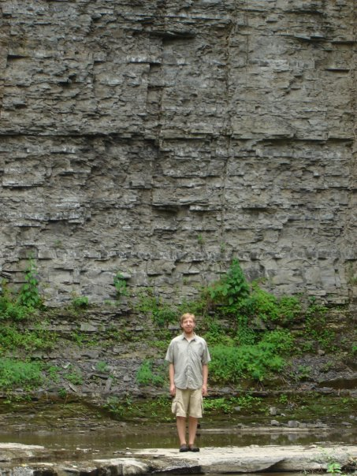

ABOUT ME

I grew up in Kutztown, PA, a small town in Pennsylvania Dutch country. After I graduated from Kutztown Area High School, I attended Ithaca College in Ithaca, NY. At IC I was interested in both physics and chemistry, an aspect of my teaching and research that is ongoing.
I worked with the Atmospheric Chemistry Modeling Group at Harvard for my graduate studies where I studied the interactions between atmospheric chemistry and climate. I studied atmospheric transport and dynamics with Alan Plumb as a postdoc at MIT.
I am an assistant professor in the Department of Physics and Astronomy at Ithaca College. I strive to be a "teacher-scholar", balancing both education and research. I previously taught in the Center for Earth and Environmental Science at SUNY Plattsburgh.
When not busy with teaching and research, I enjoy hiking and watching ice hockey (go Flyers!) and football (go Eagles!). I am a big fan of music and enjoy performing as well as attending rock and jazz concerts.